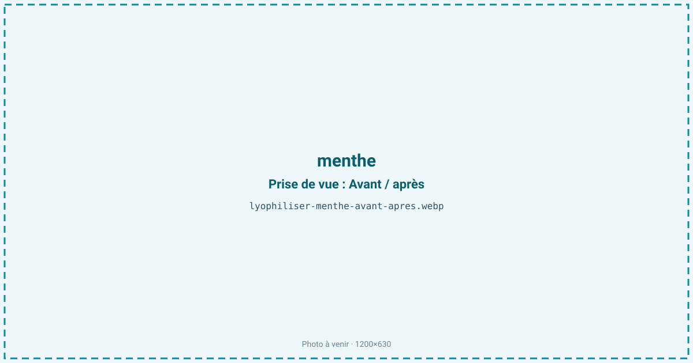
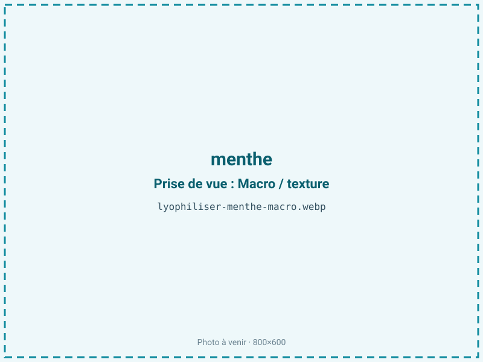
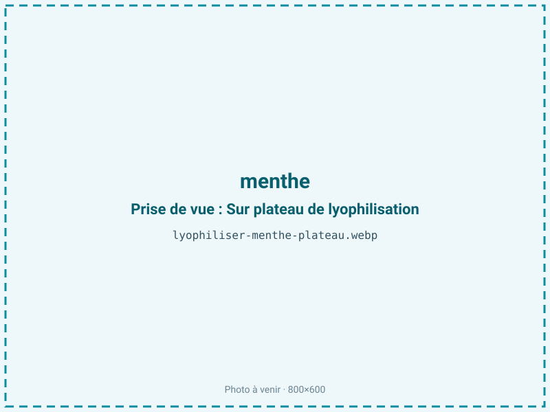
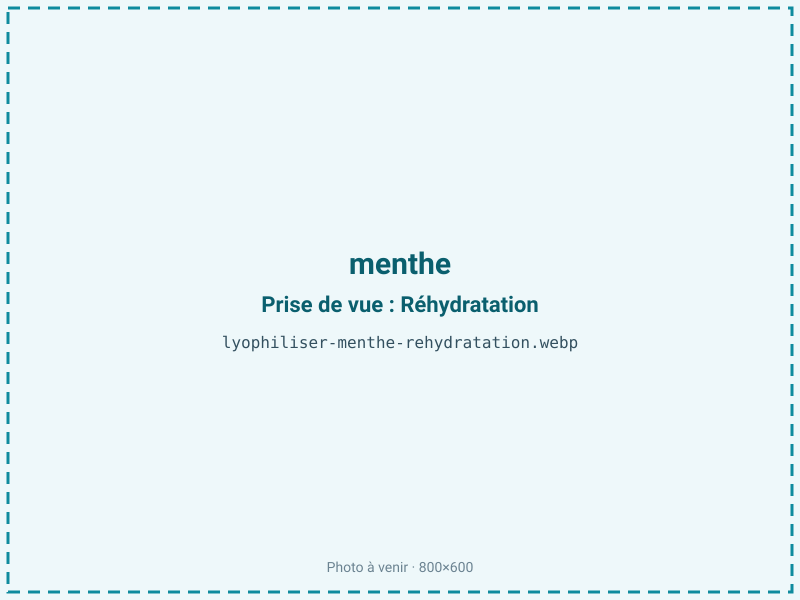

Lyophiliser de la menthe
La menthe fraîche perd son menthol en quelques heures et noircit au séchage classique. La lyophilisation fige à froid les glandes à huile essentielle de la feuille, préserve le vert vif et un profil mentholé proche de la plante vivante. On obtient une feuille cassante ou une poudre pour infusions, cocktails et pâtisserie premium.

En bref
Comment menthe se comporte à la lyophilisation
La feuille de menthe contient 85 à 90 % d'eau répartie dans un limbe très fin, et concentre ses arômes dans des trichomes glandulaires peltés — de minuscules sacs en surface qui stockent l'huile essentielle (menthol, menthone, acétate de menthyle). Ces poches sont fragiles : un séchage brutal ou une manipulation trop rude les crève et laisse fuir l'arôme.
À la congélation, l'eau du limbe cristallise vite ; l'épaisseur utile étant inférieure au millimètre, le front de sublimation traverse la feuille en quelques heures, d'où un cycle court de 16 à 24 h. La difficulté n'est pas de retirer l'eau mais de retenir le menthol : cette molécule est volatile même à basse température et peut migrer avec la vapeur d'eau si le palier secondaire est trop long ou trop chaud. La chlorophylle, elle, traverse bien le froid et garde le vert franc, là où la chaleur la transformerait en phéophytine brunâtre. La menthe poivrée, plus riche en menthol, se distingue de la menthe verte, dominée par la carvone.
Paramètres de cycle
Récolter et traiter la menthe très fraîche, feuilles étalées en une seule couche pour ne pas écraser les trichomes. Congeler rapidement à −30 °C : des cristaux fins évitent d'éclater les cellules et de disperser l'huile. En sublimation primaire, une clayette modérée suffit vu la finesse du limbe ; on écourte volontairement le palier secondaire pour ne pas entraîner le menthol avec les dernières traces d'eau. La menthe étant un produit maigre (moins de 2 % de lipides), on peut viser une aw basse de 0,20 à 0,30 sans risque de rancissement : descendre est ici favorable à la stabilité et à la conservation de la couleur. Le critère d'arrêt combine une aw inférieure ou égale à 0,30 et une feuille qui se réduit en poudre sous les doigts. Un cycle court et surveillé prime sur un séchage poussé, qui coûterait de l'arôme.
Pièges connus
- Menthol volatil : conditionner à l'abri de l'air.
- Cycle court pour préserver l'arôme.



Variantes & provenance
La variété dicte le profil : la menthe poivrée (Mentha × piperita) est dominée par le menthol, la menthe verte (spicata) par la carvone, plus douce et anisée — deux résultats très différents à l'infusion. La récolte juste avant floraison donne la plus forte teneur en huile essentielle ; une menthe montée en fleur est plus pauvre et plus fibreuse. Feuilles seules ou tiges fines changent le rendement et la vitesse de séchage, la tige plus charnue retenant l'eau plus longtemps. On peut viser la feuille entière cassante pour l'infusion visuelle, ou la poudre pour l'aromatisation ; le broyage se fait après séchage, jamais avant, pour ne pas perdre l'arôme à l'air.
Conservation & DLUO
Le facteur limitant n'est pas l'oxydation des graisses — la menthe en contient moins de 2 % — mais la reprise d'humidité et la perte lente du menthol, à laquelle s'ajoute une dégradation de la chlorophylle sous l'effet de la lumière. Pour la menthe, une aw basse est recherchée sans risque de rancissement, faute de matière grasse. La feuille lyophilisée est hygroscopique et se ramollit à l'air en reprenant l'humidité, ce qui ternit aussi la couleur : il faut conditionner vite en sachet barrière opaque. En barrière opaque, la menthe conserve arôme et couleur 12 à 24 mois à température ambiante. Le menthol étant volatil, un contenant hermétique limite aussi l'évaporation lente des arômes ; un stockage au frais et sombre préserve mieux le vert.
12 à 24 mois en barrière opaque.
Estimez selon votre emballage :
Face aux autres procédés de séchage
Au séchage à l'air, la menthe perd la moitié à deux tiers de son huile essentielle et vire au vert olive terne : le menthol s'évapore avec l'humidité qui part lentement à température ambiante. Le séchage à chaud accélère encore cette fuite et déclenche le virage de la chlorophylle en phéophytine, d'où la couleur brune des menthes séchées du commerce. Le micro-ondes sous vide limite le brunissement mais son front chaud reste défavorable aux molécules volatiles comme le menthol. La lyophilisation est la seule voie qui fixe à la fois la couleur verte et un profil aromatique proche de la feuille fraîche, ce qui justifie son emploi pour l'infusion et la mixologie premium.
Marchés & applications
Infusions et tisanes premium, sachets de thé à la menthe haut de gamme, aromatisation de cocktails (mojito, thé glacé) et de chocolaterie, décor de pâtisserie, poudre pour glaces et cosmétique. Les clients types sont les maisons de thé et d'infusion, les mixologues, les distillateurs et marques de sirops, les chocolatiers et pâtissiers, ainsi que les herboristeries qui cherchent une feuille au vert intact et au menthol préservé, impossible à obtenir en séchage classique.
- Infusions premium
- Poudre aromatique
- Cocktails
Questions fréquentes — menthe
La menthe lyophilisée garde-t-elle son goût de menthol ?
Oui, l'essentiel : le froid retient le menthol logé dans les trichomes de la feuille, là où le séchage à chaud en fait perdre plus de la moitié.
Poivrée ou verte, quelle différence ?
La menthe poivrée est mentholée et fraîche, la menthe verte plus douce et anisée (carvone). Les deux se lyophilisent bien, avec des usages différents.
Reste-t-elle verte après séchage ?
Oui, le froid préserve la chlorophylle et donne un vert franc, alors que la menthe séchée du commerce vire souvent au brun-olive.
Feuille entière ou poudre ?
On sèche la feuille entière, cassante, puis on broie si besoin après séchage. Broyer avant ferait perdre de l'arôme à l'air.
Combien de menthe fraîche pour 100 g sec ?
Environ 1,1 kg : le ratio est proche de 11:1, la feuille étant à près de 88 % d'eau.
Peut-on l'infuser directement ?
Oui, elle se réhydrate instantanément en infusion et libère aussitôt son arôme ; une pincée suffit vu la concentration.
Comment la conserver ?
En sachet barrière opaque et hermétique, à l'abri de la lumière : elle est hygroscopique et le menthol s'évapore lentement à l'air libre.
Prochaine étape : envoyez-nous 200 g
Vous avez les repères de la menthe. La suite logique : nous envoyer un échantillon et repartir avec une fiche technique sur votre produit — rendement, aw finale, coût au kilo.
Tester la menthe — 250 à 500 €Déductible de votre premier lot.